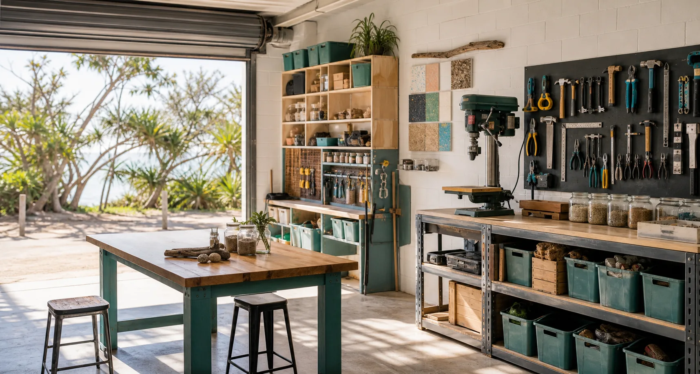

Straddie Maker-Space Lab
Could Dunwich host a practical place to make, fix, recycle and learn?

A gateway for practical local experiments.
The strongest first version is not a giant factory. It is a public access, light-industrial room where people can safely test useful ideas, repair things before they become waste, learn compact-tool workflows, and explore what local sand and recycled materials can teach.
Experiments
What small tests would help locals build confidence before anyone scales up?
Open the experiment mapRepair & Reuse
What tools and benches would help phones, bikes, furniture, small engines and gear last longer?
See the tool shedSand & Materials
How much useful learning can come from quartz sand, heavy minerals, glass, geopolymer and waste streams?
Explore material literacyCompact Tool Shed
What does a high-density workshop need so a small space can do real work without chaos?
Map the storage logicTip Loop
Could a lawful pre-tip repair and reclaim pathway stop useful things becoming waste?
Explore the sister-site ideaMarkdown Forms
What do people want to share, learn, build, repair or experiment with first?
Open the form buildersCommunity Links
Where could Ready S.E.T. Co-op, hyperlocal media, noticeboards and sister sites make the lab easier to trust?
View the ecosystemConcrete Loop
Could the batch plant become a safe sister-site for material tests, reuse and local learning?
Explore concrete questionsFuture Systems
Which Sandworm, capsule-lab, mineral moonshot and local-compute ideas belong on the horizon map?
Read the future boundaryA place for practical solutions, together.
The site asks one grounded question: what could Straddie make easier if more tools, skills, spare parts, local stories and small experiments lived in one open workshop?
What would become possible if the first success was simply a repaired pump, a bike back on the road, a shelf built from reclaimed timber, a safer community notice, or a school group learning why sand is not just sand?
Start public and useful. Repair cafes, material tests, tool inductions, recycled timber builds and simple maker nights can prove the room before the concept gets heavy.
Let people try one safe slice. The Try Everything Once workforce idea becomes a gentle rotation through tools, media, logistics, safety, materials and local service tasks.
Document the learning. Hyperlocal media and noticeboards can turn workshop activity into public knowledge, not private mystery.
Linked to the Strange But True family.
This proposal sits beside existing Straddie public prototypes. The links go to readable public pages first, with source repos available as a second layer for anyone who wants to inspect the build.
Ready S.E.T. Co-op + Hyperlocal Media
The people and story engine: training, work pathways, community updates and public trust.
Open the public pageDigital Noticeboard Network
A pathway for community notices, Markdown records, screens, builders and public update flows.
Open the noticeboard pageDisaster Kiosks
Everyday public screens that can support local notices, training, weather context and calm emergency information.
Open the kiosk pageShared Table
A modern Dig for Australia food-resilience pathway for gardens, pantries, preserving and trusted local sharing.
Open Shared TableStradbroke Grants Lab
A grant-readiness workbench that can help practical maker-space experiments become fundable notes.
Open Grants Lab